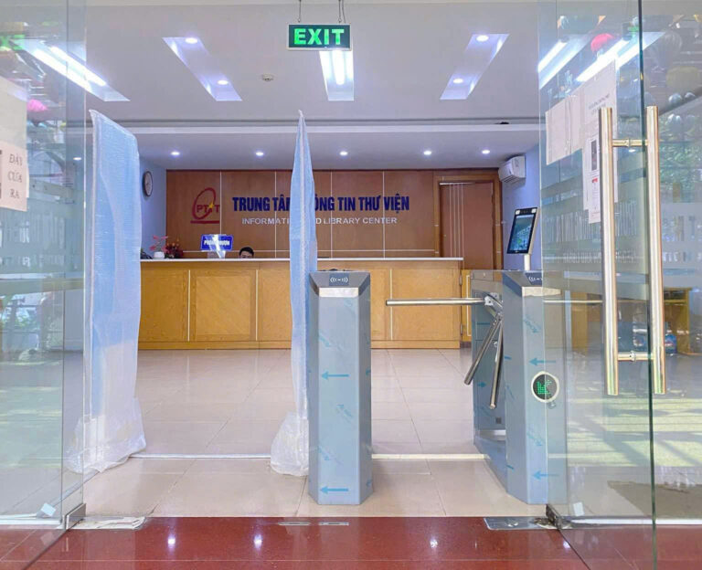

Truy cập tới 1,3 triệu luận văn, luận án truy cập mở từ 580 trường Đại học ở 29 quốc gia châu Âu. Đây là nguồn tài liệu hỗ trợ đắc lực cho sinh viên làm đồ án tốt nghiệp và nghiên cứu sinh.

Hình ảnh minh họa giao diện cổng thông tin CSDL (Nguồn: Internet)
Thư viện xin trân trọng giới thiệu đến bạn đọc, đặc biệt là các bạn sinh viên năm cuối, học viên cao học và nghiên cứu sinh 6 cơ sở dữ liệu (CSDL) luận văn, luận án miễn phí uy tín trên thế giới:
1. CSDL DART-Europe E-theses Portal
DART-Europe là một cổng thông tin cung cấp quyền truy cập mở đến các luận văn nghiên cứu toàn văn từ các trường đại học ở Châu Âu. Hiện tại, cổng thông tin này lưu trữ hàng triệu tài liệu, bao gồm đa dạng các lĩnh vực từ kỹ thuật, công nghệ thông tin đến kinh tế.
2. ProQuest Dissertations & Theses Global (Bản Open)
Mặc dù ProQuest là một CSDL thương mại, nhưng họ cũng cung cấp một phân hệ "Open" cho phép người dùng tải xuống miễn phí hàng ngàn luận văn đã được tác giả đồng ý chia sẻ mở.
"Việc tận dụng tốt các nguồn tài nguyên mở không chỉ giúp sinh viên tiết kiệm chi phí mà còn mở rộng góc nhìn học thuật, tiếp cận với các nghiên cứu tiên tiến trên thế giới." - Đại diện Trung tâm Thông tin Thư viện chia sẻ.
Hy vọng những nguồn tài nguyên này sẽ giúp ích cho quá trình học tập và nghiên cứu của bạn đọc. Nếu có khó khăn trong quá trình truy cập, vui lòng liên hệ quầy Hỗ trợ thông tin tại tầng 1 Thư viện.
3. Open Access Theses and Dissertations (OATD)
OATD là hệ thống tổng hợp các luận văn và luận án truy cập mở từ nhiều trường đại học trên toàn thế giới. Đây được xem là một trong những kho dữ liệu học thuật lớn và đáng tin cậy dành cho sinh viên, giảng viên và nhà nghiên cứu.
Người dùng có thể tìm kiếm tài liệu theo:
- Tên đề tài nghiên cứu
- Tác giả hoặc trường đại học
- Lĩnh vực chuyên ngành
- Năm công bố
Hệ thống hỗ trợ tải toàn văn miễn phí với nhiều định dạng khác nhau, giúp người học dễ dàng tiếp cận tài liệu tham khảo chất lượng cao.
4. Networked Digital Library of Theses and Dissertations (NDLTD)
NDLTD là mạng lưới thư viện số quốc tế chuyên cung cấp luận văn và luận án điện tử. Tổ chức này kết nối hàng trăm trường đại học trên thế giới nhằm thúc đẩy việc chia sẻ tri thức học thuật theo hướng mở và hiện đại.

Sinh viên có thể tiếp cận nhiều nguồn tài liệu nghiên cứu trực tuyến miễn phí.
“Việc khai thác hiệu quả các cơ sở dữ liệu quốc tế không chỉ giúp sinh viên nâng cao kỹ năng nghiên cứu mà còn hỗ trợ phát triển tư duy học thuật, khả năng phân tích và tiếp cận xu hướng công nghệ mới.”
Lợi ích khi sử dụng các CSDL mở
Các cơ sở dữ liệu mở mang lại rất nhiều lợi ích thiết thực cho người học trong quá trình học tập và nghiên cứu khoa học:
- Tiết kiệm chi phí mua tài liệu nghiên cứu quốc tế.
- Tiếp cận nhanh với các xu hướng nghiên cứu mới nhất.
- Hỗ trợ hoàn thiện đồ án, khóa luận và luận văn tốt nghiệp.
- Tăng khả năng tìm kiếm tài liệu tham khảo có độ tin cậy cao.
- Giúp cải thiện kỹ năng đọc hiểu tài liệu học thuật bằng tiếng Anh.
Khuyến nghị dành cho sinh viên
Trung tâm Thông tin - Thư viện khuyến khích sinh viên chủ động tìm hiểu, khai thác và sử dụng hiệu quả các nguồn tài nguyên học thuật trực tuyến. Trong bối cảnh chuyển đổi số giáo dục hiện nay, khả năng tìm kiếm và xử lý thông tin là kỹ năng vô cùng quan trọng đối với mỗi sinh viên.
Ngoài ra, sinh viên nên kết hợp sử dụng các công cụ quản lý tài liệu tham khảo, kỹ năng trích dẫn khoa học và các nền tảng hỗ trợ nghiên cứu để nâng cao chất lượng bài viết học thuật cũng như hiệu quả học tập.
Trong thời gian tới, Thư viện PTIT sẽ tiếp tục cập nhật thêm nhiều nguồn tài liệu, giáo trình điện tử và cơ sở dữ liệu quốc tế nhằm phục vụ tốt hơn nhu cầu học tập, nghiên cứu và đổi mới sáng tạo của người học.